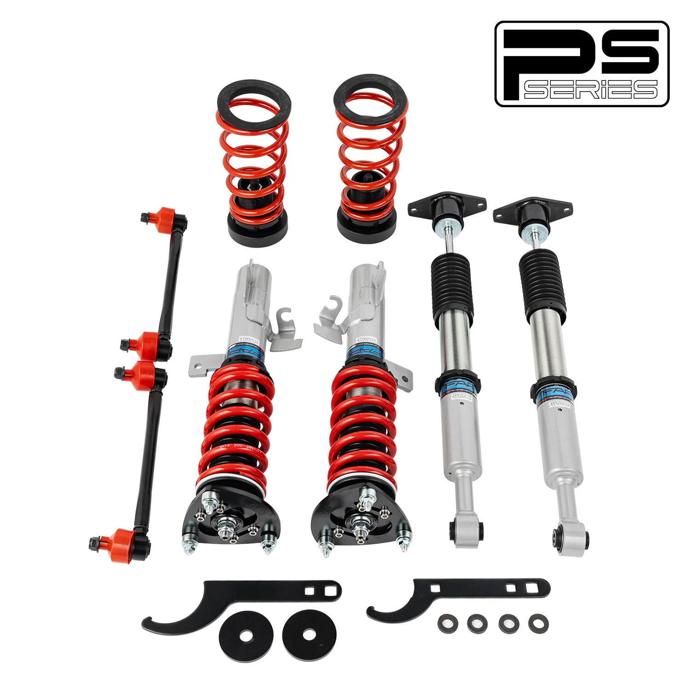

1 / 16Zawieszenie gwintowane do Mazda 3 1st Gen BK 2003-2013 & Volvo S40 2nd Gen 2004-2012 & Ford Focus 2005-2014 PS007910
Zastosowanie: Mazda 3 1. generacji BK 2003-2013 Mazda 5 2. generacji CR 2005-2010 Mazdaspeed3 pierwszej generacji BK 2007-2009 Ford Focus 2. generacji MK2/C307 2005-2014 Volvo C70 2. generacji 2006-2013 Volvo S40 2. generacji 2004-2012 Zawartość zestawu: Gwinty przednie × 2 szt Gwinty tylne × 2 szt Klucz × 2 szt Łącznik stabilizatora × 2 szt Cechy produktu: Konstrukcja amortyzatora jednorurowego zapewnia większą poj…
Application: Mazda 3 1st Gen BK 2003-2013 Mazda 5 2nd Gen CR 2005-2010 Mazdaspeed3 1st Gen BK 2007-2009 Ford Focus 2nd Gen MK2/C307 2005-2014 Volvo C70 2nd Gen 2006-2013 Volvo S40 2nd Gen 2004-2012 Package Includes: Front coilovers × 2 pcs Rear coilovers × 2 pcs Wrench × 2 pcs Sway bar link × 2 pcs Features: Mono-tube shock design, provides larger capacity of oil and gas. Adjustable ride height. Adjustable pre-load spring tension. Hi Tensile performance spring - tested over 600,000 cycles with less than 0.04% distortion. Special surface treatment improves durability and performance. All inserts come with fitted rubber boots to protect the damper and keep clean. Improve your handling performance without sacrificing comfortable ride. A fast and affordable way to easily upgrade your car's appearance. Easy installation with right tools. Ideal for any track, drift, and fast road; also suitable for daily driving. The accessories shown in the photos are included. Default 1-year warranty for any manufacturing defect, upgrade to 2 years with our Extended Warranty Program. Technical Specifications: Spring rate Front: 8 kg/mm Spring rate Rear: 4 kg/mm Adjustable height: Yes Adjustable camber plate: Only Front coilovers Adjustable damper: Non Adjustable Damper Force Warranty All the items carry standard 1 year warranty from the date of purchase. Proof of purchase is required and it's better to send us your order number. Besides, in order to speed up warranty claim, please show us images and document as many details as possible. Pictures and videos are usually enough and we don't need the defective items returned. Sometimes we may ask for more data to confirm the problem, which can help us fix it better.
1999,99 PLN
Opis produktu
Zastosowanie:
- Mazda 3 1. generacji BK 2003-2013
- Mazda 5 2. generacji CR 2005-2010
- Mazdaspeed3 pierwszej generacji BK 2007-2009
- Ford Focus 2. generacji MK2/C307 2005-2014
- Volvo C70 2. generacji 2006-2013
- Volvo S40 2. generacji 2004-2012
Zawartość zestawu:
- Gwinty przednie × 2 szt
- Gwinty tylne × 2 szt
- Klucz × 2 szt
- Łącznik stabilizatora × 2 szt
Cechy produktu:
- Konstrukcja amortyzatora jednorurowego zapewnia większą pojemność oleju i gazu.
- Regulowana wysokość jazdy.
- Regulowane napięcie sprężyny wstępnej.
- Sprężyna o dużej wytrzymałości na rozciąganie — przetestowana w ponad 600 000 cyklach przy zniekształceniu mniejszym niż 0,04%. Specjalna obróbka powierzchni poprawia trwałość i wydajność.
- Do wszystkich wkładek dołączone są gumowe buty chroniące amortyzator i utrzymujące je w czystości.
- Popraw swoje właściwości jezdne, nie rezygnując z komfortu jazdy.
- Szybki i niedrogi sposób na łatwą poprawę wyglądu Twojego samochodu.
- Łatwa instalacja przy użyciu odpowiednich narzędzi.
- Idealny na każdy tor, drift i szybką drogę; nadaje się również do codziennej jazdy.
- W zestawie akcesoria widoczne na zdjęciach.
- Standardowa roczna gwarancja na każdą wadę produkcyjną, możliwość rozszerzenia do 2 lat w ramach naszego programu rozszerzonej gwarancji.
Dane techniczne:
- Twardość sprężyny Przód: 8 kg/mm
- Twardość sprężyny Tył: 4 kg/mm
- Regulowana wysokość: Tak
- Regulowana płyta pochylenia: tylko przednie gwinty
- Regulowany amortyzator: Nieregulowana siła amortyzatora
Gwarancja
Wszystkie produkty objęte są standardową roczną gwarancją liczoną od daty zakupu. Wymagany jest dowód zakupu i najlepiej przesłać nam numer zamówienia. Poza tym, aby przyspieszyć realizację zgłoszenia gwarancyjnego, prosimy o pokazanie zdjęć i udokumentowanie jak największej liczby szczegółów. Zwykle wystarczą zdjęcia i filmy i nie potrzebujemy zwrotu wadliwych produktów. Czasami możemy poprosić o więcej danych w celu potwierdzenia problemu, co pomoże nam lepiej go rozwiązać.
Application:
- Mazda 3 1st Gen BK 2003-2013
- Mazda 5 2nd Gen CR 2005-2010
- Mazdaspeed3 1st Gen BK 2007-2009
- Ford Focus 2nd Gen MK2/C307 2005-2014
- Volvo C70 2nd Gen 2006-2013
- Volvo S40 2nd Gen 2004-2012
Package Includes:
- Front coilovers × 2 pcs
- Rear coilovers × 2 pcs
- Wrench × 2 pcs
- Sway bar link × 2 pcs
Features:
- Mono-tube shock design, provides larger capacity of oil and gas.
- Adjustable ride height.
- Adjustable pre-load spring tension.
- Hi Tensile performance spring - tested over 600,000 cycles with less than 0.04% distortion. Special surface treatment improves durability and performance.
- All inserts come with fitted rubber boots to protect the damper and keep clean.
- Improve your handling performance without sacrificing comfortable ride.
- A fast and affordable way to easily upgrade your car's appearance.
- Easy installation with right tools.
- Ideal for any track, drift, and fast road; also suitable for daily driving.
- The accessories shown in the photos are included.
- Default 1-year warranty for any manufacturing defect, upgrade to 2 years with our Extended Warranty Program.
Technical Specifications:
- Spring rate Front: 8 kg/mm
- Spring rate Rear: 4 kg/mm
- Adjustable height: Yes
- Adjustable camber plate: Only Front coilovers
- Adjustable damper: Non Adjustable Damper Force
Warranty
All the items carry standard 1 year warranty from the date of purchase. Proof of purchase is required and it's better to send us your order number. Besides, in order to speed up warranty claim, please show us images and document as many details as possible. Pictures and videos are usually enough and we don't need the defective items returned. Sometimes we may ask for more data to confirm the problem, which can help us fix it better.
FAPO Polska
Ten produkt obsługujemy lokalnie
Autoryzowana obsługa
FAPO Polska prowadzi katalog, kontakt i zamówienia bez odsyłania klienta do zewnętrznych sklepów.
Dobór po aucie
Sprawdzamy dopasowanie produktu do pojazdu, rocznika i wersji przed finalizacją zamówienia.
Wsparcie po zakupie
Masz kontakt w Polsce w sprawach zamówień, wysyłki, gwarancji i zwrotów.